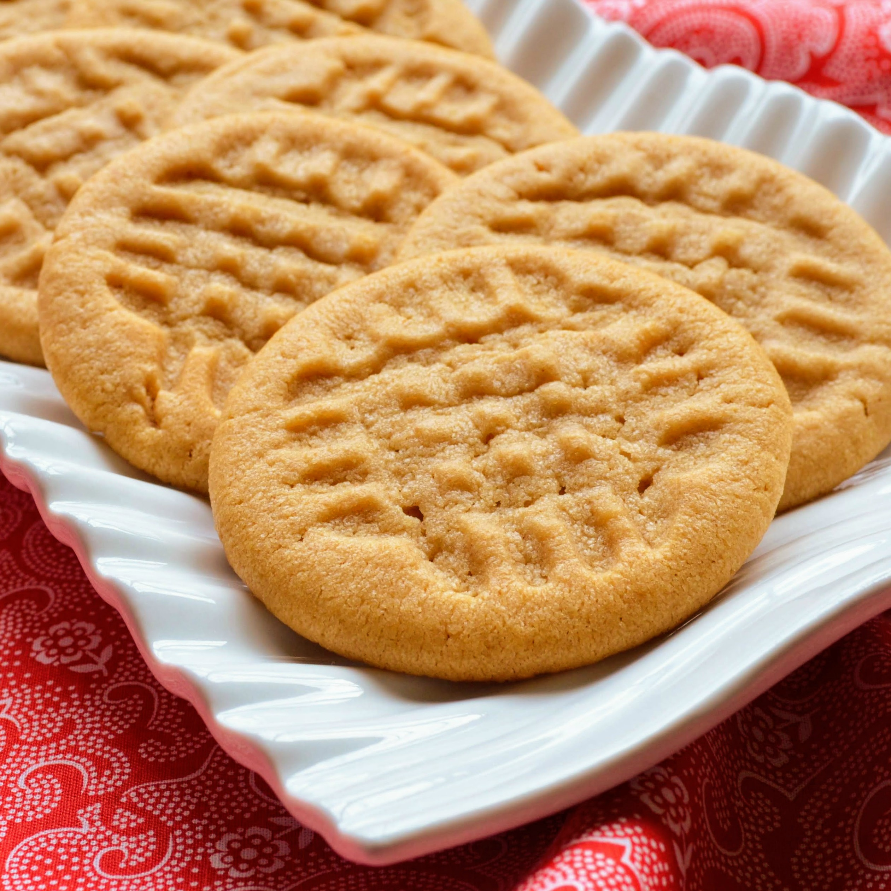

PEANUT BUTTER COOKIES!

Simple and delicious peanutty cookies!
Basic cookies, easy for anyone to create and a joy to share with family and friends
Ingredients
- ½ cup unsalted butter
- ½ cup white sugar
- ½ cup packed brown sugar
- ½ cup creamy peanut butter
- ½ teaspoon kosher salt/li>
- ½ teaspoon baking powder
- ½ teaspoon bakingsoda
- 1 egg
- 1 ¼ cups all-purpose flour
Method
- Beat butter, white sugar, brown sugar, peanut butter, salt, baking powder, and
baking soda in a stand mixer until smooth.
- Scrape down the sides of the bowl and beater with a spatula.
Add egg and mix for about 1 minute.
- Slowly mix in flour with the mixer on low. Scrape down the sides of the bowl
and beater. Mix on medium until combined, about 30 seconds.
- Form dough into a ball, cover with plastic and refrigerate for 2-3 hours.
- Preheat the oven to 375 degrees F (190 degrees C).
- Portion out cookie dough in equal-sized balls on a baking sheet covered with a
silicone baking mat. Use damp hands to roll dough into smooth balls.
Stamp each ball with a fork in a criss-cross pattern.
- Bake in the preheated oven for 10 minutes until golden.
- Leave on the baking sheet for 5 minutes before transferring to a cooling rack.
Recipe taken from here
Return to HOME